The thesis
Home|Work is one window onto the intelligence on your own Mac. It opens to your day. It answers with sources you can check. It runs your routines overnight and keeps your coding agents in view, on whichever screen is nearest. It stays quiet: no dashboards, no knobs. The heavy machinery (models, tools, grants, hosts, audit) lives in Relay, and Relay enforces it. Home and Work are two rooms, not two apps.
What we found
A designer agent drove every surface at desktop, iPad (both orientations) and iPhone sizes and logged 26 friction points (full log in the appendix). Five of them decide the first impression.
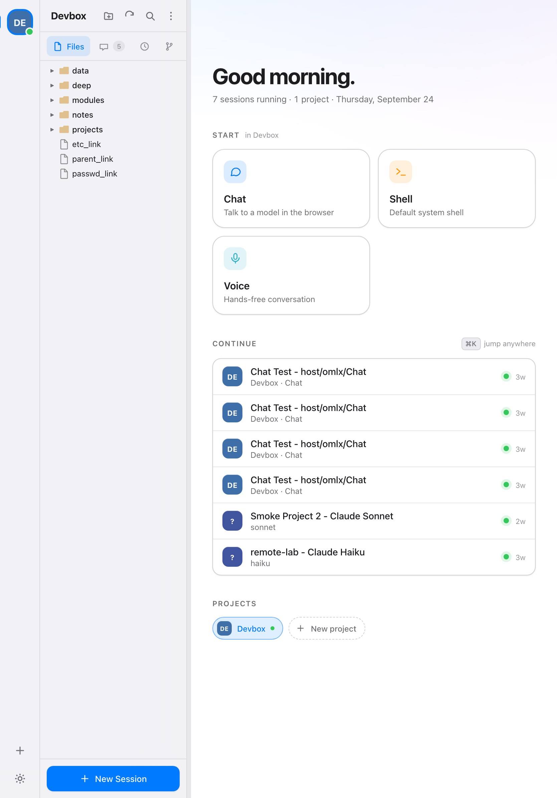
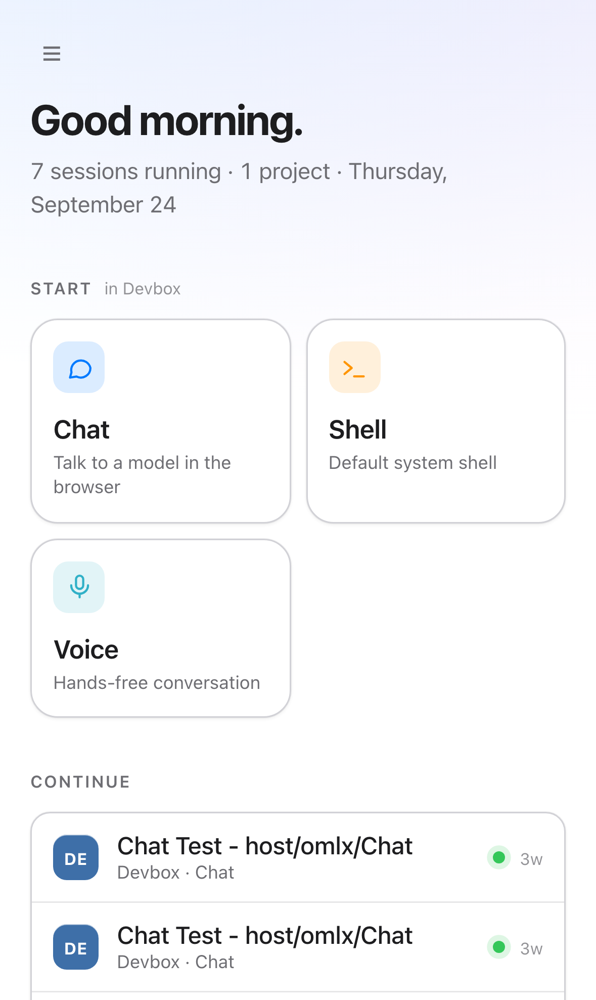
The five that matter most
| What happens | Why it hurts |
|---|---|
| You land in a terminal, not Home. Every live server terminal auto-opens as a tab on every device and takes focus. | The front door is skipped. On a phone the first screen is a wall of old shell output in two tabs both called "shell". |
Everything says "running". Relay sends live; eve reads active and defaults it to true. | "11 sessions running" and green dots on three-week-old chats. The one signal Home exists to give is wrong. |
| Three steps and a modal to ask a question. Tile → "Shell Launcher" → model form → Start. Then a blank chat. | Chat is the most frequent action and it has the most ceremony. Perplexity is one box. |
Failures are raw or silent. HTTP 400: {"error":"unknown model…"}; the typed prompt is lost; creating a project from an iPad hangs on a password prompt only the Mac can see; Tasks shows "No tasks" when the scheduler is down. | Daily use needs trust. Each of these teaches you the app might be lying. |
| iPad gets the desktop layout at portrait. One breakpoint at 768px; the sidebar is pinned and takes about 29% of the width. | The iPad is the main mobile device. Voice, diff and chat never get full width. |
Fix first (real bugs, independent of the redesign)
Confirmed in code. These can go through the normal public flow now; none of them reveal the design.
| Bug | Where | Effect |
|---|---|---|
| Weekly tasks always rejected | public/dialogs/task-dialog.js:340 sends mon…sun; relayScheduler/schedule.go accepts only monday… | Every weekly task fails to save (400). |
| "Once" tasks always rejected | task-dialog.js:452 sends datetime (local, no zone); the scheduler reads at (RFC 3339) | Every one-off task fails to save. |
| Every session shows as running | public/core/state-store.js:42 reads active, defaults true; relay sends live | False "running" dots and counts everywhere. |
| Search dialog focuses the close button | dialogs/search-dialog.js | Typing does nothing; Enter closes the dialog. |
| Deep link on cold load lands on Home | #session/<id> hash routing | Links from notifications or Shortcuts won't work. |
| Send enabled while disconnected | ws-client / chat form | "Thinking…" forever; the message goes nowhere. |
| Stale voice labels | README and Settings say Kokoro / Whisper | The daemons run Qwen3 now. |
unknown model, and pi and Claude Haiku returned "Provider process exited". The scheduler wasn't running either (Tasks returned 404). That may be the VM's current state, not eve, but it's worth a look before any build work.The new shape
Four spaces, the same in both modes. One noun per thing. A layout that changes with the device rather than shrinking.
Spaces
Today: the front door. Ask box already focused, the Morning brief, Needs you (permission asks, failed routines, exited agents), Continue (with "from iPad, 12 min ago"), Running agents, Changes (Work only).
Threads: every conversation in the current mode. Auto-titled, pinned first, grouped by day, searchable.
Projects: one page per project with its threads, agents, changes and files. The Work workbench. Hidden in Home until a second project exists.
Routines: scheduled prompts written as sentences, each with its last result.
Nouns
| You see | Backed by |
|---|---|
| Thread | relay-sessions session (chat, voice, research; type is internal) |
| Agent | a live terminal from a template (Claude Code, pi, shell) |
| Project | relay project (a folder, local or on a host) |
| Routine | relayScheduler task |
| Mode | a relay project + its scopes, presets and brief |
| Preset | a chat template (model + prompt + voice) |
Home | Work
The wordmark is the switch. Tap it and the bar slides under the other word: Home warms the accent, Work cools it. On a fresh open it follows your work hours; it never switches mid-thread.
Each mode maps to a relay project whose scopes Relay enforces: Home can read the personal mail and family calendar, Work can read the work ones. Threads keep the mode they started in. A refused tool call offers "Ask in Work". A toggle without enforcement leaks, and enforcement without a visible place produces refusals nobody can explain; this gives you both.
By device
| Navigation | Work tools | |
|---|---|---|
| Wide desktop, iPad landscape | Left rail: mode switch, 4 spaces, pinned projects, ⌘K | Terminal, editor, diff side by side |
| Regular iPad portrait, Split View | Slide-over sidebar, one 720pt column | Terminal + keybar; unified diff |
| Compact iPhone | Bottom bar: Today · Threads · Capture · Projects. Push navigation, no tabs | Read-mostly; editor read-only |
A coarse pointer switches on 44pt targets at any width, so iPad landscape gets the wide layout with touch-sized controls.
Mockups
Twelve screens, rendered from static HTML in mockups/ (open any .html to inspect, or re-render with node design/homework/tools/render-mockups.js). Yellow notes mark the decisions worth arguing about.
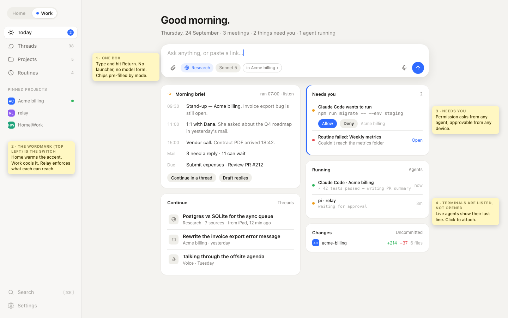
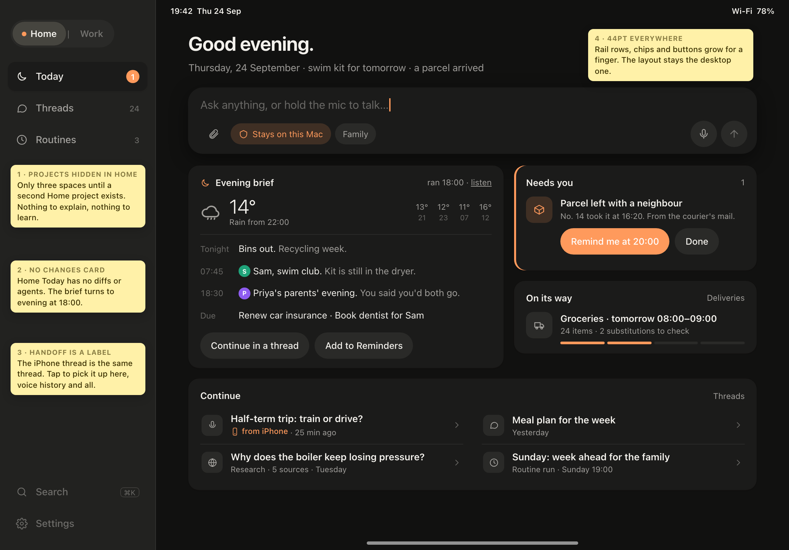
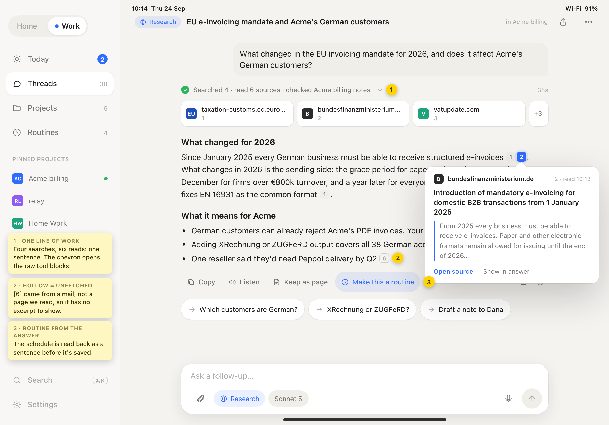
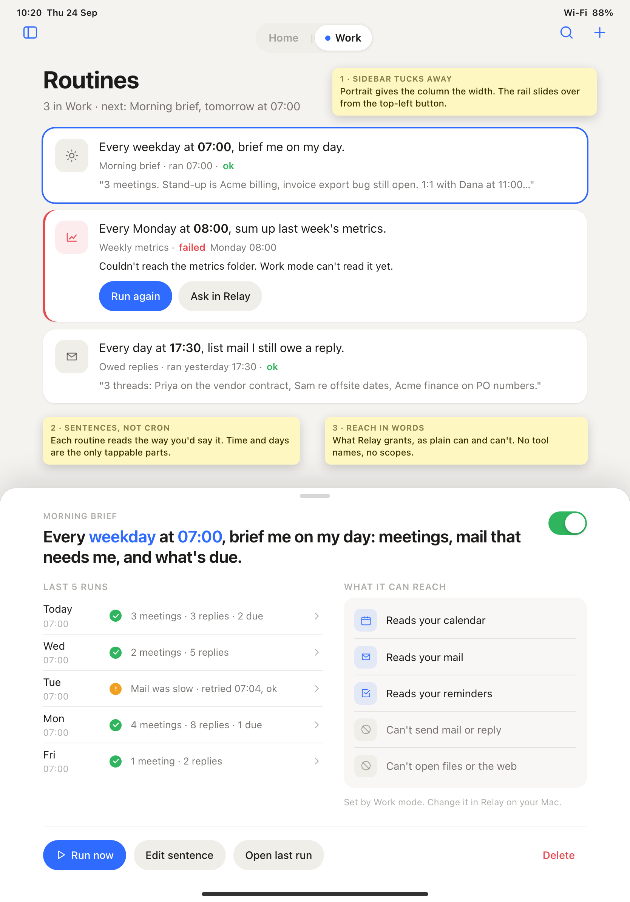
iPhone
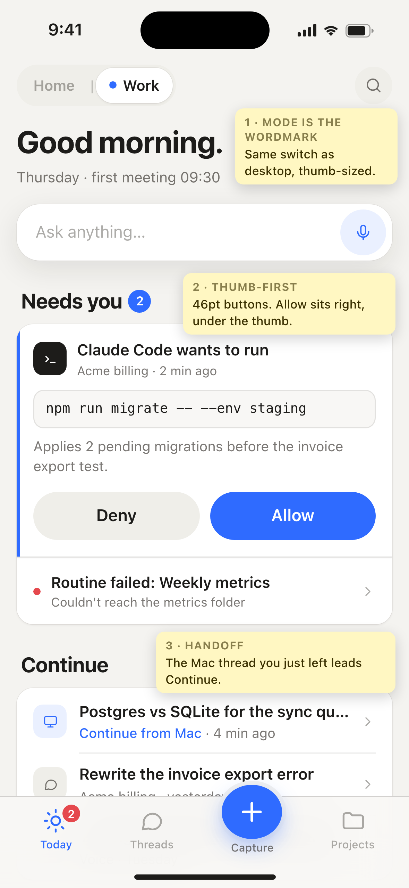
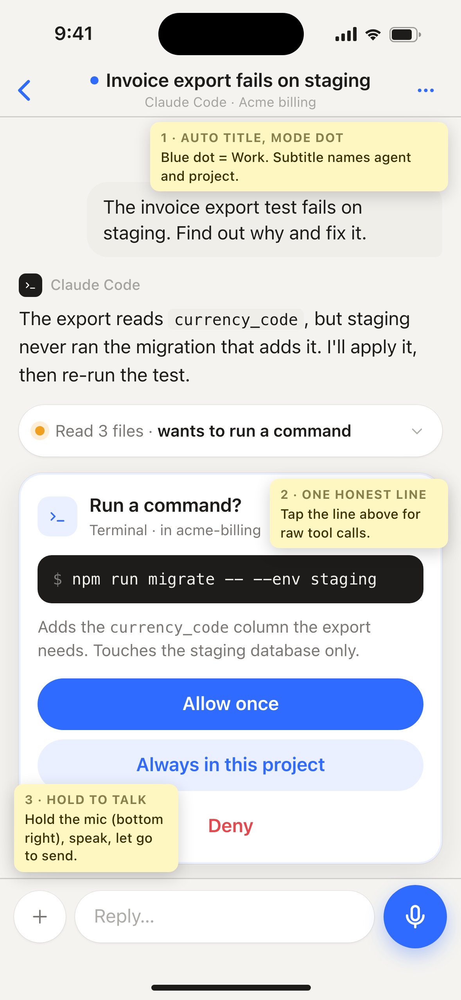
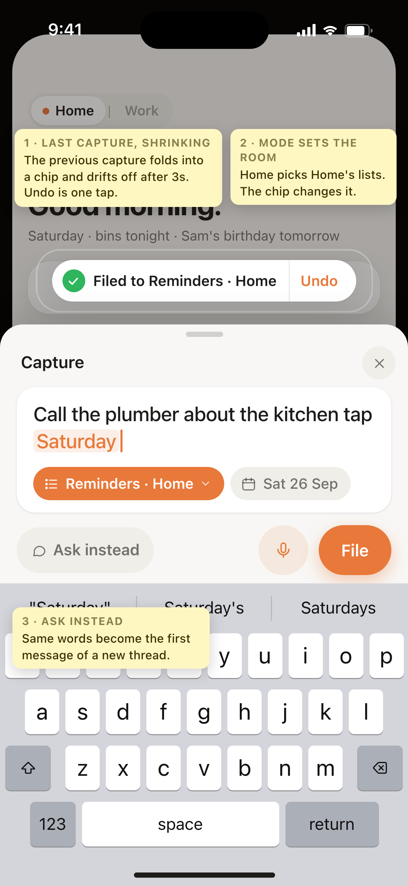
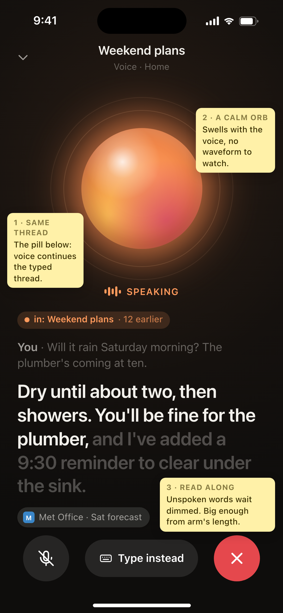
Mac
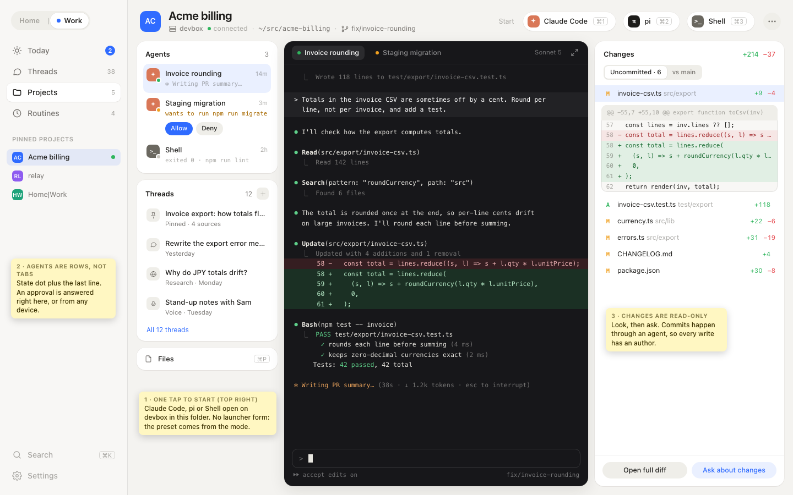
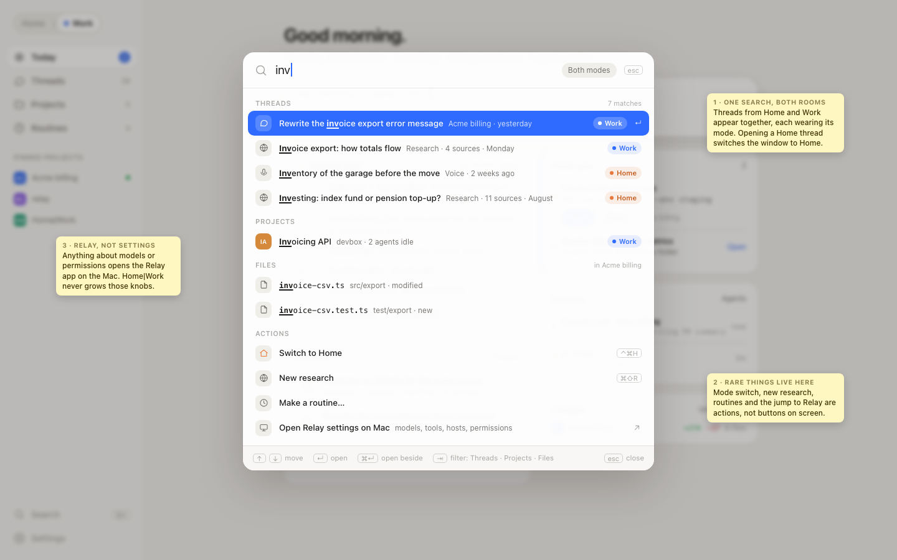
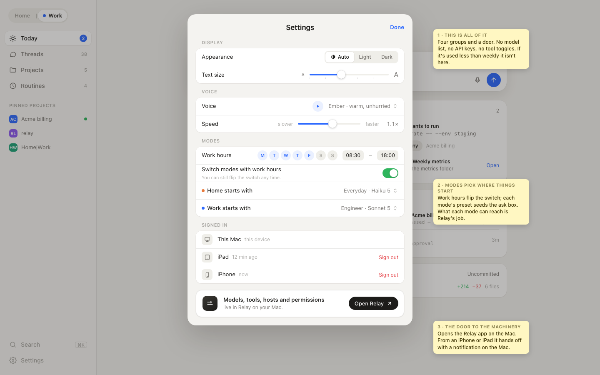
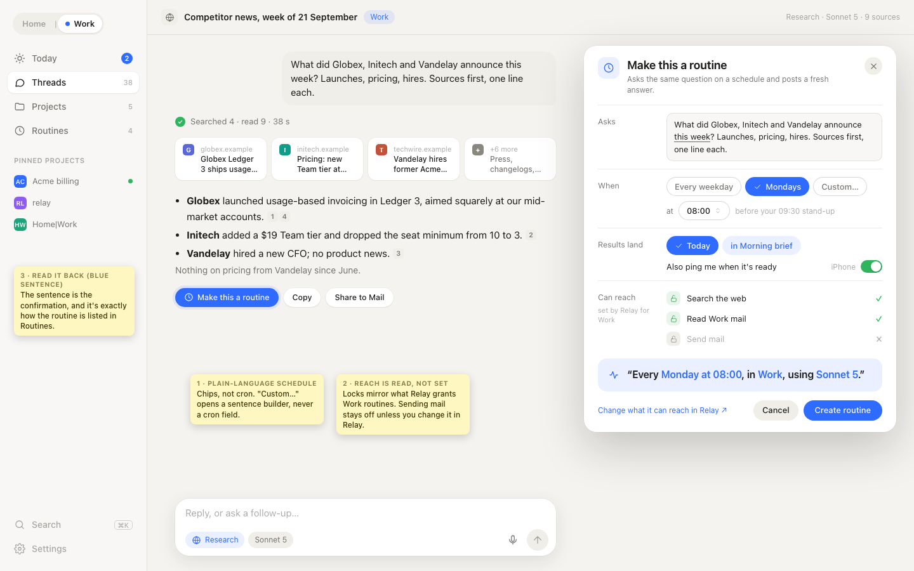
User stories
Priority: Now first release, Next the release after, Later when the rest has settled. Sizes are S / M / L.
Now · MToday is the front door
As the owner opening Home|Work on any device, I want to land on Today with the Ask box focused, so I can start or pick up in one step.
- A fresh open (no hash route, no activity on this device for 60 min) shows Today. Live terminals are listed under Running, never auto-opened.
- Within 60 minutes, open tabs restore as today.
- On desktop, the first printable keystroke lands in the Ask box.
- Opening Today makes no LLM call.
Now · MMorning brief
As the owner, I want a brief waiting each morning (events, due reminders, mail needing a reply, overnight routine results, weather), so I can plan the day in a minute.
- It's a headless routine; Today renders its latest reply with the run time.
- Its project allows read tools only.
relay auditshows mail_send and web_fetch denied. - Refresh runs it now. A failure shows one line with Retry. Continue opens the run as a thread.
- Doesn't ship until an injection email in the test mailbox fails to make it send anything.
Now · SNeeds you
As the owner, I want one list of what's waiting on me, so nothing stalls unseen.
- Pending permission asks from any thread or agent, with Allow and Deny.
- Failed routines stay until opened. Exited agents show their exit code.
- Hidden when empty.
Next · MContinue on any device
As the owner moving between iPad and desk, I want the thread I was just in to be first everywhere, so handoff takes no hunting.
- eve records
{deviceClass, lastInputAt}per thread and exposes it on the list. - Continue orders by server activity first, local recents second.
- Input on another device in the last 15 min shows "Continue from iPhone".
Now · MAsk without choosing anything
As the owner, I want to type and press Return, so I can ask without picking a project, template or model.
- Return starts a thread in the mode's default project with its Ask preset, through
_launchSessionso chat defaults still apply. - A model chip shows the preset model; changing it affects only this thread.
- ⌘N anywhere opens the same box as a sheet. No dialog between typing and the first token.
Now (Claude) · LResearch with sources
As the owner, I want a Research depth that searches and shows its sources above the answer, so I can check what it tells me.
- A Research preset per mode asks for numbered citations; its policy allows search and fetch so it doesn't stop to ask.
- eve builds the source list from the turn's tool calls, never from the model's prose.
- Phase 1 uses Claude's built-in search. Phase 2 adds
web_searchandweb_read(page text, not raw HTML) for local models, with the provider set in Relay. - Tool activity shows as one live line that expands to the raw blocks.
Next · MCitations you can check
As the owner, I want inline [n] markers that show their source, so I can verify a claim in place.
- Hover (pointer) or tap (touch) shows domain, title and fetched excerpt.
- A marker with no fetched source renders hollow.
- No third-party requests: domain monograms, not favicons; CSP unchanged.
Now · MThreads name themselves
As the owner, I want every thread titled and searchable, so the list reads like a table of contents.
- After the first reply a hidden
__title:session proposes ≤6 words and renames, unless you already did. Filtered and registered like__search:. - Uses a local model; skipped silently if none.
- Threads search and ⌘K match title and first turn.
Later · SKeep an answer
As the owner, I want to save an answer as a page, so research outlives the thread.
- Keep writes
pages/<slug>.mdwith sources as footnotes; the toast offers Open.
Now · SBetter failure
As the owner, I want a failed reply to keep my words and offer a way forward, so a broken model never costs me a thought.
- Errors read in plain words, with Retry and Try another model.
- The failed prompt stays in the thread and in history.
- Send is disabled while disconnected, with a visible "Reconnecting" state app-wide.
Next · MProject page
As the owner in Work, I want one page per project, so I stop hunting across sidebar tabs and dialogs.
- Replaces the Sessions and Tasks tabs and the launcher's Resume tab; reuses Files and Changes as is.
- Agent templates and host sessions start in one tap.
- Changes show per-repo counts; a file opens the existing diff pane.
Next · MAgent board
As the owner running several agents, I want every live terminal in one list, so I know which one to look at.
- Rows show project, template, state, time since last output and the last non-empty line.
- Tapping attaches; no terminal opens by itself. Closing a tab never kills the shell without asking.
Now · SAsk about this
As the owner, I want to ask about a file, selection, diff or search result, so the answer is grounded in what I'm looking at.
- ⌘N or a context-menu item starts Ask with the item attached.
- Replaces the search dialog's "AI enhanced" summary.
Next · MQuick capture
As the owner on iPhone, I want to jot or say one line and have it filed, so I can empty my head in five seconds.
- One field; hold to dictate.
- A hidden session that can only call
reminders_createfiles it in the mode's list, and says where it went. - A line that reads as a question offers "Ask instead".
Now · SAction Button opens voice in the current mode
As the owner, I want the Action Button to open a voice thread in my current mode, so I don't have to manage a favourite.
#/voice-chatlaunches the mode's voice preset; the favourite star goes.- A live voice thread younger than 30 min resumes instead.
Later · MShare into Home|Work
As the owner, I want to share a link, photo or text from any iOS app, so it becomes a capture or a question.
- Share extension in the native app; a URL offers Summarize, Ask or Keep. Uses the blocking
POST /api/sessions/:id/message.
Next · MVoice is a way into any thread
As the owner, I want to talk into any thread and go hands-free without starting a new session.
- Hold the mic (touch) or a key (desktop) to dictate; release sends.
- Hands-free opens the orb on the same thread; ending returns to text with the transcript in place.
- No debug text, no orb tuning sheet; voice and speed live in Settings.
Next · SListen
As the owner, I want the brief or any answer read aloud.
- A visible speaker action on every answer (not hover-only), with the spoken sentence highlighted.
- Code and tables become a short spoken placeholder; native audio keeps playing with the screen off.
Next · MRoutines read as sentences
As the owner, I want routines shown as plain sentences with their last result.
- "Every day at 08:30 · Morning brief · Home · ran 08:30, ok".
- "Make this a routine" on any thread pre-fills prompt, model and project; reach is shown in words before saving.
- Weekdays needs a scheduler change (
days: [...]on daily).
Next · SResults land in Today
As the owner, I want routine results as quiet cards, not tabs.
- Completion updates a Today card; nothing opens by itself; the unseen count shows on Today only.
- A scheduler that's down says so instead of "No tasks".
Now · MPermission asks inside the thread
As the owner, I want permission requests shown in the thread, so I see them in context and can't dismiss one by accident.
- A card with tool, target and a one-line reason; raw JSON behind a disclosure.
- Allow once is primary; "Always in this project" is secondary; there's no "Allow All" at equal weight.
- Pending asks also appear in Needs you on every device.
Now · SRunning means running
As the owner, I want the live dot and the running count to be true.
addSessionreadslive; missing means not running. A unit test pins it.
Now · MHome and Work are separate rooms
As the owner, I want Home threads unable to reach Work mail, and the reverse.
- Each mode maps to a relay project whose scopes are set in Relay.
- A refused call offers "Ask in Work" (or Home), rerunning the turn there.
- Switching modes never moves or re-scopes an existing thread.
Next · MWhat did it touch
As the owner, I want to see every tool call a thread or routine made, including refusals.
- eve passes through relay's
GET /api/auditread-only, scoped to the project and time window. - Exact per-thread filtering needs a session id on audit records (relay change).
Next · SStayed on this Mac
As the owner, I want to know when an answer never left my machine.
- Shown when the model is local and no open-world tool ran. Needs a locality flag per model in relayLLM.
Now · SAdmin that can't finish here says so
As the owner on an iPad, I want anything that needs my Mac to tell me, instead of hanging.
- Actions needing presence on the Mac show "Approve on your Mac" with a timeout.
- Delete and create have the same weight of confirmation.
Delight moments
Small, specific and cheap to build once the structure is right.
Kill · move · keep
The goal is fewer, better things. "Move to Relay" means the Mac app already does it (usually better). Relay's admin is Mac-only by design, so moving something there means it's gone from iPad and phone; that's intended for admin, not for daily actions.
| What | Verdict | Why |
|---|---|---|
| Shell Launcher as the way to chat | Replace with the Ask box; agents move to the Project page | Three steps before the first token. |
| Launcher "Resume" tab | Kill | A third copy of Continue and the Sessions list. |
| Auto-opening every live terminal on load | Kill; list them under Running | This is what hides Home today. |
| Home start tiles and project chips | Replace with Today | Tiles open dialogs; chips duplicate the rail. |
| Settings: Colors tab (9 pickers × 2), Typography tab | Kill / merge into one text-size control | A theme builder, not a daily tool. Auto / Light / Dark and one accent per mode. |
| TTS/STT prompt tags, backend pickers | Kill from UI (backend picker only in the iOS app) | Jargon, one real option in browsers. |
| Voice orb tuning sheet, device-log streaming, "TTS: server" line, TTFT/tps line | Hide behind a debug flag | Debug output shown to the user. |
| Voice drawer in text chats | Merge into Settings plus one hands-free button | Choosing a voice is a once-a-month decision. |
| Favourite-template star | Kill; use the mode's voice preset | One less concept. |
| Cost pill in every header | Hide; show in thread info for paid models | "$0.00" on a file tab is noise. |
| Tab bar on phone | Replace with push navigation | Tabs are unreadable at 393pt. |
| Long-press a tab's × to delete the session | Kill | An invisible destructive gesture, easy to trigger on touch. |
| Plan-mode hexagon | Replace with a labelled chip, only in Work agent threads | Unlabelled, and meaningless in Home or Ask. |
| Permission modal | Replace with the inline card | A backdrop tap counts as Deny; "Allow All" sits first. |
| Search "AI enhanced" summary | Merge into "Ask about these results" | One AI surface instead of two. Keep the hidden-session plumbing for titling. |
| Session folders | Hide the UI, keep the data | Auto-titles, pinning and search replace filing. |
Local slash commands /zsh /bash /claude /help | Merge into ⌘K; keep /clear and provider commands | Hard to discover and project-bound. |
| Project dialog: host form and probe, MCP picker, model allow-list, permission policy | Move to Relay (it already has all four) | Two editors for one setting invites races; eve's MCP checkbox can grant * without Relay's breadth warnings. eve keeps name, folder, mode and presets. |
| "Regenerate Skills" | Move to Relay (already there) | Admin, sitting next to Delete Project. |
| Terminal-type routines | Hide behind Advanced | Rare; chat routines cover the daily need. |
| Monaco editing on phone | Read-only on compact | Nobody edits code on a phone keyboard. |
Legacy sidebar entry points (sidebar-renderer.js) | Kill | Duplicates the project panel. |
Keep and polish: ⌘K; the chat reading column; Changes + diff pane (default to inline under 1000pt); HTML live preview; SSH host projects; the native iOS audio path and TTS director; the terminal keybar (fix the clipped arrows and 32pt keys); project monograms (but stop colours re-ranking when a project is added).
Relay's part
Relay already covers nearly all of eve's admin, usually in more depth. Six things have no Relay equivalent and stay in eve: routines, chat presets, launching threads and agents, appearance and voice preferences, file-tree preferences, and host tmux reattach. To let eve shed the rest, Relay needs a few small additions.
| Gap | Size | Why |
|---|---|---|
Wire relay tools for chat and Claude sessions (RelayMCPCommand is never set in production) | M | Blocks the brief, capture and local-model research. Touches the sandbox and tool permissions, so it needs its own design. |
GET /api/permissions/pending + broadcast of permission requests to every connection | S | Powers "Needs you" across projects and devices. |
| Run one tool call on behalf of a project | S | Lets the brief fetch facts without a model. |
| A mode on relay projects (home / work / both) plus a default project per mode | S | Projects already sync live between eve and the tray; modes ride on the same path. |
| Live model picker for allowed models (replace the comma-separated field) | S | Needed before eve drops its model checkboxes. |
preview / title on the session Summary | S | Titles live in each device's localStorage today, so the iPad and the phone disagree. |
| A read-only "needs attention" count on the frontend route | S | Lets eve say "Relay needs attention on your Mac" instead of tool calls failing silently. |
| Session id on audit records | S | Exact "what did this thread touch". |
| Project delete disables that project's scheduler tasks | S | Today eve does the cleanup client-side. |
Scheduler days: [...] on daily schedules | S | "Every weekday" is the most natural routine and it can't be expressed today. |
| eve's signed-in devices listed in the Passkeys tab, with sign-out | M | Tokens in eve's data dir aren't visible or revocable anywhere. |
A web_search + web_read tool for local models (macMCP or a new MCP) | M | Research on local models has nothing but raw-HTML web_fetch today. |
| A locality flag per model in relayLLM | S | Powers "Stayed on this Mac". |
Backends eve already has but barely uses: scheduler run history with reply text, cost and tokens (GET /api/tasks/:id/history); task_completed events with an "interactive" flag; a blocking POST /api/sessions/:id/message for Shortcuts and a share sheet; /api/status/detailed for a "model warming up" hint; and macMCP's 51 tools (calendar, reminders, mail, messages, contacts, weather, maps, shortcuts; no Notes, but Shortcuts can reach it).
Questions answered
Settled in review on 24 September. These override anything earlier in this page.
Claude stays in relay-sessions
The "Claude as just another model" bridge already exists: relay-sessions runs the unmodified claude binary with stream-json in and out, keeps it open between turns (15-minute idle timeout), and lists Haiku, Sonnet and Opus beside every other model.
It does not move into relayLLM. There it would become a chat-completion endpoint any harness could call with your subscription, which loses Claude Code's own tools and permission hook and drifts toward what Anthropic's terms forbid ("route requests through Free, Pro, or Max plan credentials", "intermediate … credentials or session tokens"). Staying in relay-sessions keeps it the permitted case: your own sign-in, the unmodified binary, one user.
Routines may run on Claude, for now
Scheduled routines may target Claude until Anthropic clarifies. The terms say Pro/Max limits "assume ordinary, individual usage of Claude Code and the Agent SDK"; a morning brief is you, for you, but unattended. If clarification says otherwise, switch those routines to an API key (clearly allowed) or a local model. The routine sheet shows which model a routine uses, so the switch is visible.
Claude Code's own schedulers don't replace relayScheduler. Cloud routines (/schedule) run in Anthropic's cloud and can't reach this Mac, its files or local MCP tools. /loop needs an open session and expires after 7 days. Desktop scheduled tasks need the Desktop app running. The documented pattern for unattended local runs is headless claude -p from a scheduler with --mcp-config, which is what relayScheduler already does. Keep it.
Today aggregates by mode, not everything
Work's Today covers every Work project; Home's covers every Home project. Every row carries its project monogram, and clicking one narrows Today to that project (Esc widens it again).
- Threads and agents: already global with
projectId; filter by the project's mode. - Calendar, mail, reminders, weather: not per project. They come from the mode's brief, which runs in the mode's own project; Relay scopes that project to the right accounts. One source per mode, nothing to merge.
- Needs you: permission requests only reach a connection that joined that session. Relay-sessions needs
GET /api/permissions/pendingand a broadcast of new/resolved requests to all connections (Hub.Broadcastexists). Failed routines already arrive on the global scheduler stream.
How the Morning brief is built
A routine per mode at 07:00 in the mode's project, read-only tools, results read from the task's run history. Two refinements:
- Structured output. The model returns JSON (
{time, title, note}rows, mail and due counts), so Today renders clean rows instead of whatever markdown it chose that morning. - Facts fetched, judgment generated. Events, reminders, weather and unread counts are fetched directly (exact, instant, free); the model only adds notes like "Dana asked about Q4 in yesterday's mail". The brief stays correct on times and still shows something if the model is down. Needs a small relay endpoint that runs one tool call for a project.
Blocker: relay tools are off for chat and Claude sessions
Relay only spawns its tool server (mail, calendar, reminders, files) for a session when RelayMCPCommand is set, and production never sets it (relay/docs/session-host.md, documented gap). eve's "use relay tools" default therefore does nothing today; a local model answers "I don't have access to your file system". The brief, capture-to-Reminders, "Ask in Work" refusals and research on local models all depend on it. It's the first relay item in the plan.
Plan
Each phase is shippable alone and leaves the app better. The client is mid-migration, so new spaces are built as new public/core modules behind #welcomeScreen, leaving the legacy panes alone. The frozen e2e and visual gates will move on purpose; each phase budgets a re-baseline.
0 · Truth (days)
Wire relay tools for chat and Claude sessions. The bugs above: running dot, weekly and once tasks, search focus, send-while-offline, cold deep links, stale voice labels. Stop auto-opening terminals. Plain-language chat errors that keep your prompt.
1 · The front door
Today with the Ask box, Needs you, Continue, Running. Ask-without-choosing. Auto-titles. Inline permission cards. Settings cut to one sheet. The three breakpoints plus coarse-pointer sizing. Phone bottom bar and push navigation. Two spikes run alongside: brief safety (injection mail) and research quality (ten real questions, Claude vs local with a stub search tool).
2 · Home | Work
Modes on relay projects, the wordmark switch, the per-mode presets, "Ask in Work" on refusal, the Morning brief, the Action Button on the mode's voice preset. Project dialog trimmed to name, folder, mode and presets.
3 · Research
Sources row, citation chips and hollow citations, one working line, Keep as page, pasted-URL chips. Local-model search once the MCP exists.
4 · Workbench and routines
Project page, agent board, Ask-about-this, Routines as sentences, Make this a routine, results in Today, "What did it touch".
5 · On the go
Quick capture, voice into any thread, Listen, handoff rows, then the iOS share extension and native notifications for Needs you.
Your calls
Decisions that change what gets built. My recommendation is first in each.
- Where does a mode live? A
modefield on relay projects (recommended: syncs live, Relay enforces scopes), or an eve-owneddata/modes.json. - Web search for local models: a self-hosted metasearch engine (private, no key) or a keyed search API (better results, leaves the box). Decides Relay's external-access grants.
- Should routine failures reach you outside the app? Native iOS notifications (recommended, later) vs. a message to yourself via
messages_send(powerful tool for a headless session). - What counts as "mail that needs a reply" in the brief: flagged, or unread from known contacts?
- Front-door rule: is "Today after 60 minutes away, restore tabs otherwise" right for your desktop habit?
- Terminal-type routines: keep behind Advanced, or move to Relay?
- Session folders: OK to hide the UI (data kept)?
- Where should this work live? See below.
homework-design, where the stories become issues and this page becomes its README. Say which and I'll set it up.Appendix
Full friction log (hands-on audit, 4 viewports)
| # | Finding | Sev. |
|---|---|---|
| 1 | Live server terminals auto-open on every device and take focus; Home is skipped. | High |
| 2 | Every session shows as running (active vs live). | High |
| 3 | Sessions indistinguishable: "Chat Test - host/omlx/Chat" ×4; failed first messages never set a title; orphans show "?". | High |
| 4 | Continue and Sessions order looks arbitrary; recent sessions sort below old ones. | Med |
| 5 | Raw JSON errors; no retry or switch model; the failed prompt is lost from history. | High |
| 6 | "Shell Launcher" for chat, inconsistent names, "i" icon, pointless Back, defaults to Haiku not your last model, lists broken models. | High |
| 7 | 3 clicks and a modal to chat; the new chat is blank with a mystery chevron and no visible model. | Med |
| 8 | No copy on code or messages; tool pill says only "Bash"; TTFT/tps shown; read-aloud hover-only; no regenerate or edit. | Med |
| 9 | Permission sheet: "Allow All" first and equal weight; raw JSON; no session context. | Med |
| 10 | Unlabelled plan-mode hexagon; composer icons change per model without explanation. | Med |
| 11 | Cost pill on file and terminal tabs, and for free models; covers tabs on phone. | Low |
| 12 | Creating a project from iPad hangs on a Mac-only password prompt, with no feedback. Delete needs no approval. | High |
| 13 | Project dialog: inverted "unchecked = all", internal MCP names, Regenerate Skills beside Delete. | Med |
| 14 | Search dialog focuses the close button; "AI enhanced" inside a file grep. | Med |
| 15 | Icon-only sidebar tabs shift width; Changes pill overflows; "New Folder" means two things. | Med |
| 16 | Tasks hides a scheduler 404 as "No tasks"; "+ New Task" looks disabled; two-step new form. | Med |
| 17 | .csv, .swift, .cs, .kt, .vue refused for editing; file menu only Rename/Delete (no Add to chat, Copy path). | Med |
| 18 | Splits only by drag; once split the chat tab vanishes and renders empty. | Med |
| 19 | Closing a terminal tab kills the shell unasked; long-press × deletes a session; no tab overflow. | High |
| 20 | Deep links fail on cold load. | Med |
| 21 | Disconnect shown only in the chat header; Send stays enabled offline. | High |
| 22 | Voice starts push-to-talk under a "Hands-free" tile; debug line; red Safari tip every time; developer orb controls. | Med |
| 23 | Settings is mostly theme tinkering; jargon; no Done button. | Low |
| 24 | Adding a project recolours existing project avatars. | Low |
| 25 | Terminal: black band in light theme, zero left padding, zsh % markers. | Low |
| 26 | Diff defaults to side by side at iPad portrait; truncated labels. | Low |
iPad and iPhone breakage
- iPad portrait (834) gets the desktop layout; the sidebar can't collapse.
- iPhone composer: the textarea is ~157px between five buttons; the placeholder clips.
- Attachment remove × is a 9×14px target. Keybar arrows scroll under the fixed "⋯"; iPad keys are 32pt.
- Phone editor opens in split mode; tabs clip under the cost pill.
- No ⌘K entry point on touch. Hover-only controls are invisible. Split is drag-only.